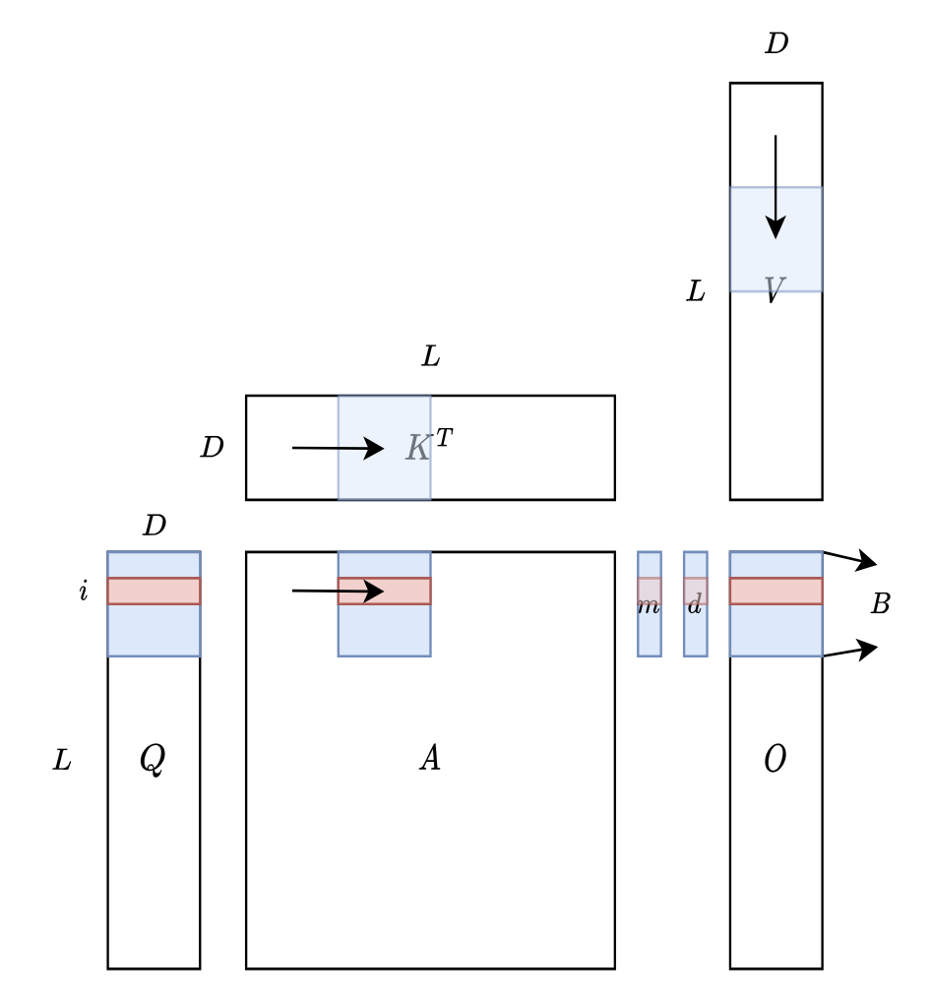

Flash Attention
Suppose that we are computing the attention outputs with length$n$ and head dimension $d$.
Let $b$ denotes the block size of the tile, $t$ denotes the number of tiles in a row.
$$
\begin{align*}
s_i &\leftarrow Q[k,:]K^T[:,i]\\
m_i &\leftarrow \max\{m_{i-1}, x_i\}\\
d_i &\leftarrow d_{i-1} e^{m_{i-1} - m_i} + e^{x_i - m_i}\\
o_i &\leftarrow o_{i-1} \frac{d_{i-1}e^{m_{i-1}-m_i}}{d_i} + \frac{e^{x_i-m_i}}{d_i}V[i,:]
\end{align*}
$$
Notably, the overall SRAM memory footprint depends only on $b$ and $d$ and is not related to context length $n$. As a
result, this algorithm can scale to long context without encountering memory issues.

def rotate_half(x):
x1 = x[..., : x.shape[-1] // 2]
x2 = x[..., x.shape[-1] // 2 :]
return torch.cat((-x2, x1), dim=-1)
def apply_rotary_pos_emb(q, k, cos, sin, position_ids):
cos = cos.squeeze(1).squeeze(0)
sin = sin.squeeze(1).squeeze(0)
cos = cos[position_ids].unsqueeze(1)
sin = sin[position_ids].unsqueeze(1)
q_embed = (q * cos) + (rotate_half(q) * sin)
k_embed = (k * cos) + (rotate_half(k) * sin)
return q_embed, k_embed